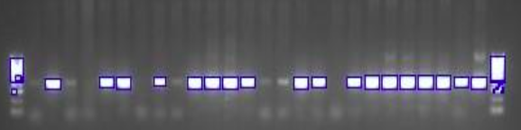
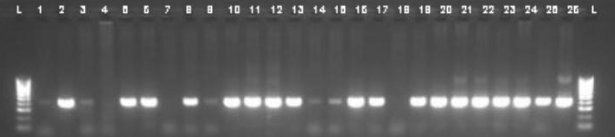

Overview
Automating the detection and labelling of lanes in 96-well plate gel electrophoresis images addresses a critical need for improving efficiency and accuracy in biological data analysis. Manual labelling is labor-intensive and prone to errors, especially when processing large datasets, such as those produced during pandemic-related research such as the COVID-19 pandemic. The developed solution aims to streamline the analysis process by reducing manual intervention and providing a reliable means of correctly labelling gel electrophoresis images, thus minimising the risks of mislabeling and enhancing reproducibility.
The approach utilises computer vision and image processing techniques, implemented in Python using libraries such as OpenCV, NumPy, and Matplotlib. Key stages in the workflow include grayscale conversion to simplify image data, binary thresholding for segmenting foreground features, Canny edge detection to delineate lane boundaries, and contour extraction to identify relevant regions. By systematically computing lane widths, gaps, and bounding boxes, the algorithm was able to label lanes and ladders with a high level of accuracy, particularly in images with lane widths of 9 and 10 pixels, achieving 83% accuracy in those cases.
This system has significant potential to support laboratory workflows by minimising manual workload, reducing error rates, and enhancing the speed of DNA analysis. Future improvements could focus on integrating machine learning models to better handle variations in lane width and optimise the algorithm’s performance across different gel images. The resulting tool could play an essential role in accelerating biological research, offering a consistent and automated approach to electrophoresis image analysis.
Results
Snippets showing some results of various algorithms ran on the images.

Bounding Box Detection of Lanes and Ladders in Gel Electrophoresis Image
The image above demonstrates the results of the automated detection process for identifying lanes and ladders in a gel electrophoresis scan. Bounding boxes have been accurately drawn around individual lanes and ladders, showcasing the algorithm's ability to locate regions of interest. These bounding boxes help isolate each lane for further processing, ensuring correct identification before numerical labels are applied.

Final Lane and Ladder Labeling in Gel Electrophoresis
This image shows the final labeling of lanes and ladders in the gel electrophoresis scan. The first and last ladders are labeled 'L,' following the standard convention, while the lanes in between are labeled consecutively. The labeling process involved calculating the coordinates of each lane and ladder, allowing the lane detection algorithm to accurately assign labels based on their positions.